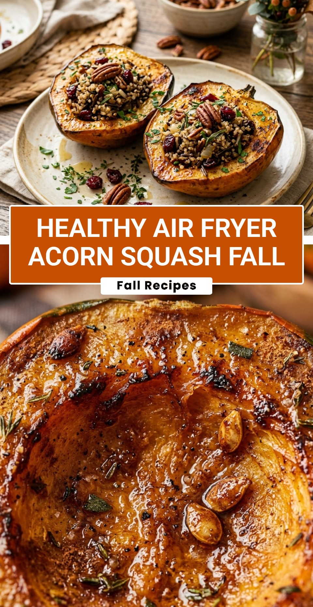

Healthy Air Fryer Acorn Squash Fall
October 18, 2026

Fall is the season for warm, comforting flavors, and nothing captures that essence better than acorn squash. Using an air fryer makes this seasonal favorite easier than ever to prepare. You get perfectly tender squash with caramelized edges in a fraction of the time it takes in a traditional oven. It is a healthy, vibrant side dish that fits perfectly on any autumn dinner table.
Recipe Information
Prep Time: 10 minutes
Cook Time: 20 minutes
Total Time: 30 minutes
Servings: 4
Difficulty Level: Easy
Nutrition Information
Calories per serving: 115 kcal
Protein: 2g
Carbohydrates: 24g
Fat: 4g
Fiber: 3g
Sugar: 7g
Sodium: 15mg